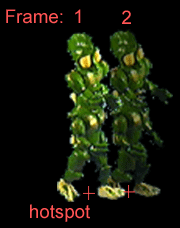
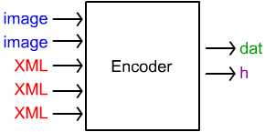

|
|
The Tools
Overview | Sprite Editor | Encoder | Kyra XML
The tools are used to change source images into sprites and tiles. There is a Sprite Editor to mark the location of sprites and tiles, and an Encoder to convert multiple input files into a .dat file for run time use.
Before looking at the tools however, it's important to review:
The Anatomy
of a Sprite Frame

This is one of the DRONE sprites in the BEM demo.
Sprite: DRONE
Action: WALK.DIR3
Frame: 1 (and shown for reference) 2
The hotspot is the origin point of the frame. If you position the sprite at 10, 10 and Draw(), the sprite will be drawn with the hotspot at location 10, 10. The bounds of the frame (not shown) is a bounding box that fully encompasses the image in the frame. The bounds will be different for every frame.
It is important to note that Frame 2 is in a very particular relation to Frame 1. If Frame 2 is drawn in a different relative location, the feet will appear to "slide" as the sprite moves. For this sprite, aligning is very important. If you need to align sprites, you'll need to use the Sprite Editor. (More below.) A sprite's delta refers to the x and y distance between its hotspots from the current frame to the next frame. You can call DoStep() to automatically advance the frame and apply the delta.
A Tile -- in contrast to a sprite -- is always square (width == height.) It can be rotated and flipped, however. You should always use Sprites unless you need to rotate and flip the image.
A Font is a special kind of sprite that contains letters, numbers, and symbols. (Actually, the fact that is is a special sprite has almost no practical implication....a font is a font.)
Sprites, Tiles, and Fonts all start with source images: pictures of characters walking, backgrounds, room objects, whatever makes up the world you are trying to create. These images are usually scanned or rendered, and cleaned up with an image editor before they are ready to be used by Kyra.
Overview of Tools
The Encoder takes the source images and the XML files that describe them and creates data files that are used by the engine. A '.dat' file stores all the source image data, and a C header file is also written for the client program's use.

There are several ways to create the XML files the encoder needs:
Each tool is described
in detail on its own page.